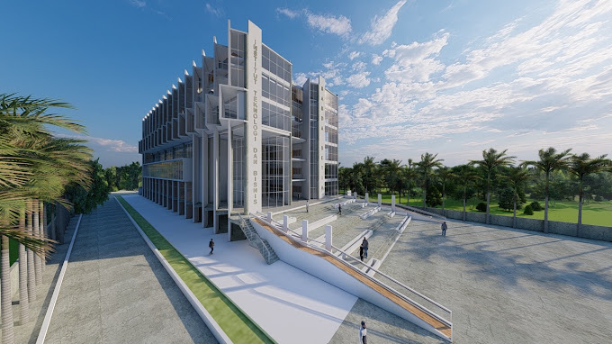

Kampus Intitut Teknologi dan Bisnis Sabda Setia
Kami memberikan sebuah pendidikan dan pengalaman yang mendorong
kesuksesan mahasiswa dalam karir mereka. Kami membantu mereka
untuk berhasil di karir mereka — menemukan bidang yang mereka
senangi dan berani untuk memimpin di bidangnya.